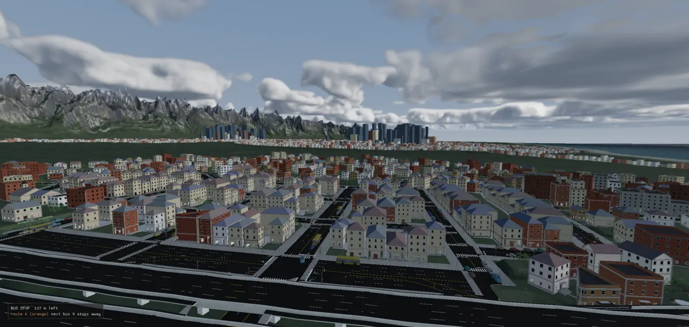
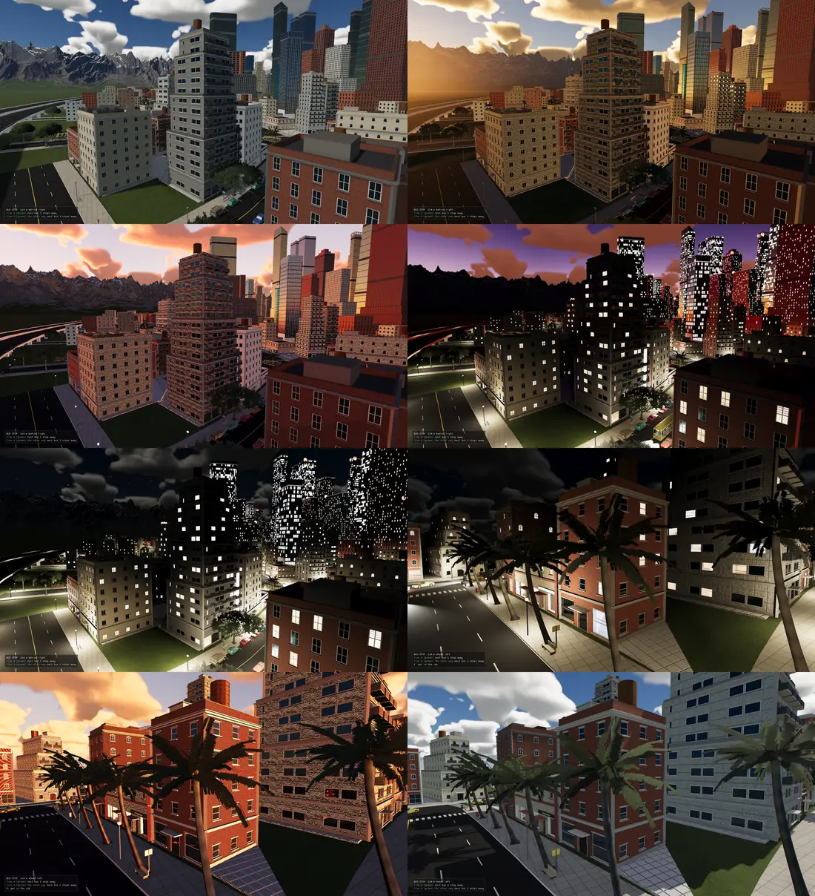
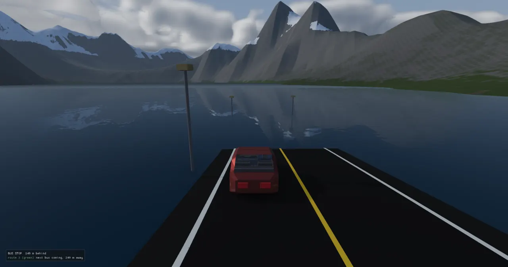
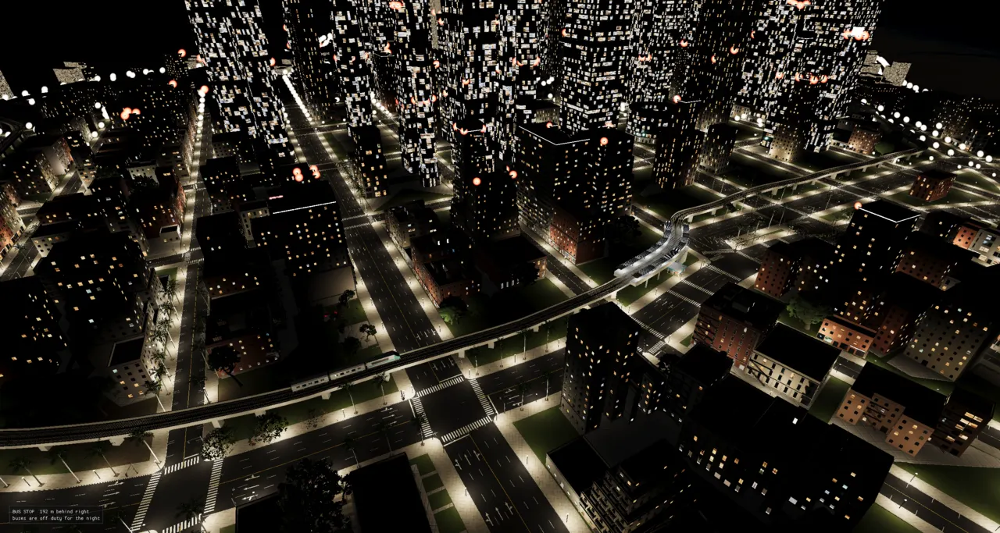
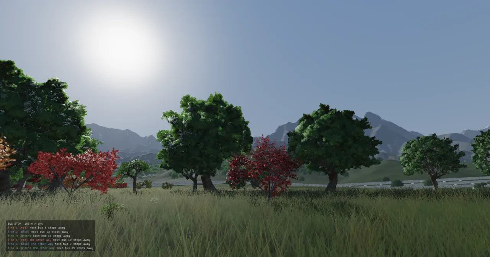
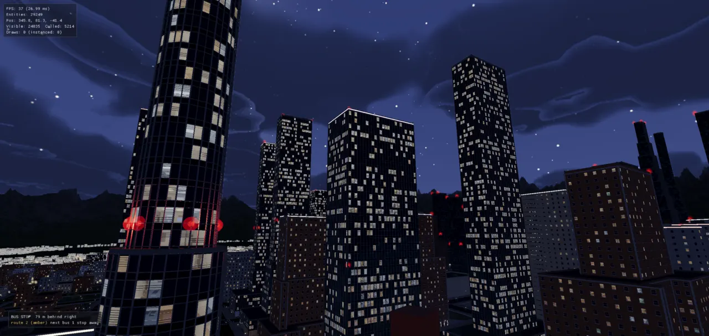
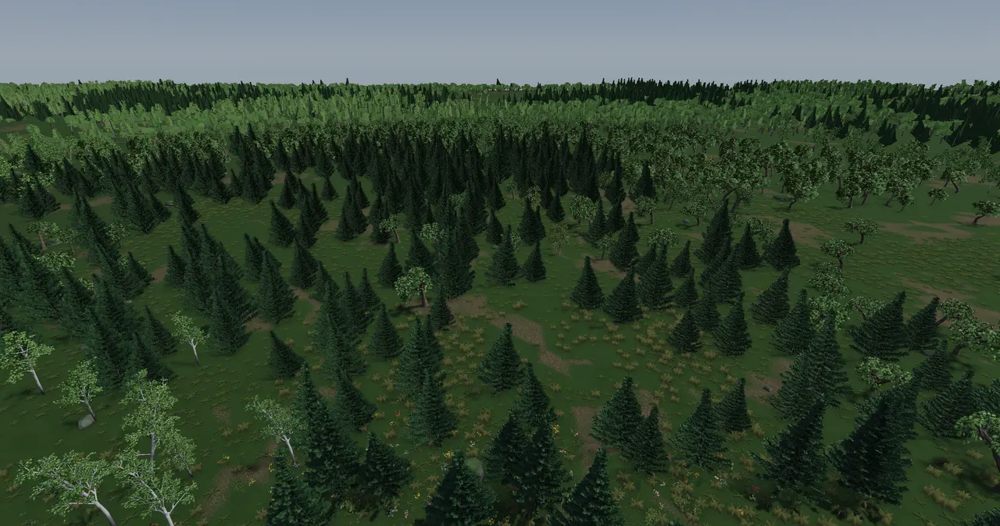

Every frame, the engine walks the world, decides what can be seen, and turns that into a list of draws. One backend (Vulkan on Linux and Windows) then records the whole frame into one command buffer: light lists, sky tables, shadow maps, reflection probes, a lit HDR scene, clouds, a handful of screen-space passes, ray-traced reflections near the camera, and a composite that tone-maps the result onto the screen. The idea that holds it together is a small seam. The engine only ever says "draw this mesh with this material here, under these lights". Everything the GPU needs is the backend's business. This page is the map of the whole frame; the lights, the sky, the reflections, the clouds and the weather each have a page of their own.

In November 2026 the Vulkan renderer took most of a "renderer realism" plan in a few days: thousands of real
lights instead of 32, a sky computed from a model of the atmosphere, an eye that adapts to the frame, reflection
probes along the streets, ray-traced reflections close to the camera, and clouds placed by a simulated weather.
Each is its own system with its own page. They meet in one place: the shading of one pixel in
mesh.frag (and in the two compute shaders that shade what a probe or a ray sees,
probe_relight.comp and rt_reflect.comp, which include the same lighting code).
Who feeds the shading of one pixel. Each box links to its page. The dashed line is the one loop: the frame's brightness, measured on the GPU, sets the next frame's exposure. RenderSystem also hands the probes their faces to capture and the rays their near scene (not drawn, to keep the lines readable).
Read it from the left. The meshes and materials come from the procedural generators and the bakes that
cache them (the procedural language, bakes); a draw's
class (structure, furniture, simBody…) is what the ray pick and the probe capture select by. The
lights are data: kinds and pools in assets/scripts/lights.lua. Everything that gives off
light publishes candidates on a board (the city's cars their head and tail lamps, buses their cabin lights, a
streamed building its ceiling fittings, the flashlight, the beacons), and one picker in LightSystem
chooses the frame's set within a budget the renderer states (Renderer::lightCapacity(): 31 on a
forward renderer, 4,096 on clustered Vulkan; ADR-0362, 0363). DayNightSystem places the sun and the moon,
reads their colour through the atmosphere model when the physical sky is on, publishes the weather and the wind,
and runs the eye. The weather is simulated over the land and the sea (ADR-0390), and
CloudMapSystem bakes from it the weather map that places every cloud (ADR-0386).
In the middle, each system turns into GPU work: froxel light lists, sky tables, a cloud march, probe cubes, a
ray-tracing scene. On the right they are all read by one shader through the same set of bindings (set 0:
the globals, the shadow cascades, the cluster buffers at 8–10, the sky view and aerial volume at 11–14, the sky
cube at 15, the probes at 16–17, the weather map at 18; shaders/vulkan/globals.glsl), and lit by one
function, shadeLight in lighting_common.glsl, which the probe relight and the ray hits
include as well. That sharing is the point: a lamp lights a wall, the wall's probe and a ray's hit on the wall
with the same maths (ADR-0373).
One light system, clustered lights, room lights, pre-exposure, night windows, a room's bounce.
The physical sky, auto exposure, the aerial perspective volume, the sky cube and harmonics, underwater.
Street and storey probes, relit live; ray queries near the camera, and the fallbacks.
The march, the weather map, cloud types as data, wisps, cirrus, cloud shadows.
Weather states as data, one wind, the weather simulated over the land and the sea.
Two switches decide what you see. Clustered lights are Vulkan's default
(RT_CLUSTERED=0 is the forward A/B). The physical sky is not the default yet:
DayNightSystem turns it on only with RT_SKY=physical, and without it the frame keeps the
hand-made day/night palette, the old night exposure (×6) and the analytic sky light. The sky view, aerial volume and
sky cube then do not run, mesh.frag never reads a probe, and the rays stay off, because only the
physical branch takes the probe's share out where the rays put theirs (ADR-0376). ADR-0369 lists what is left
before physical becomes the default (the lit windows' calibration, the stars).
Vulkan only, so far. All of this is in the Vulkan backend. Metal and WebGPU loop a
forward 32 lights (the picker trims to them by importance) and have none of the rest; Metal's own, older scattering
sky is opt-in per level and tuned to the old exposure (ADR-0367). docs/renderer-parity.md,
re-surveyed as a Vulkan | Metal | WebGPU ledger on 2026-11-07 (3b898f89, "Vulkan is the reference
now"), is the list of what they lack; issue #203 tracks Metal parity for the physical renderer and the clouds.

RT_SKY=physical, 2026-11-07): the sun and the sky
from the atmosphere tables, the clouds lit from their own height, the eye adapting from noon to night, the lamps
and windows at their real luminance (ADR-0367..0369).The repository's first commit (d165c80b, 2026-06-01) was not a game engine. It was an offline
path tracer: a program that makes a picture by firing many random rays per pixel, bouncing each one
around the scene and averaging the light the bounces collect. "Cornell box with path tracing, glass, mirror,
KD-tree, and bilateral denoising", standard library only. The interactive Metal renderer arrived the same day
(3ba3ba60, "Add interactive Metal renderer with RHI abstraction and PBR shading"). Everything
else on this page grew from that second commit, but the tracer is still in the tree and still builds: the
raytracer CLI and the editor's in-process render both call one function,
renderImage, which renders rows of the image as jobs on the job system.
The tracer is the reference the realtime renderer is held to. Its PBR material uses the same GGX BRDF as the GPU shaders (ADR-0017), and it applies the same fitted ACES curve, so an offline render and a viewer frame can be compared. Two pieces of it are worth knowing. First, the camera is a thin lens: each ray starts at a random point on the aperture disk and aims at the point on the focal plane, so depth of field falls out of the averaging for free.
Ray Camera::generateRay(double u, double v, double lensU, double lensV,
double radialScale) const {
// Brown radial distortion (+ the caller's per-channel scale) on centered
// image coordinates; k1 = k2 = 0 and radialScale = 1 is exact passthrough.
double s = 2.0 * u - 1.0;
double t = 2.0 * v - 1.0;
double r2 = s * s + t * t;
double warp = radialScale *
(1.0 + lens.distortionK1 * r2 + lens.distortionK2 * r2 * r2);
u = (s * warp + 1.0) / 2.0;
v = (t * warp + 1.0) / 2.0;
Vec3 target = lowerLeft + u * horizontal + v * vertical;
Vec3 origin = position;
if (lensRadius > 0.0) {
double r = lensRadius * std::sqrt(lensU);
double phi = 2.0 * PI * lensV;
origin += r * std::cos(phi) * basisU + r * std::sin(phi) * basisV;
}
return {origin, normalize(target - origin)};
}
Second, the acceleration structures. The class is TriangleBVH (it was called KdTree
until #117 wave 0): it splits the triangles into two halves at the median centroid of the longest axis, and each node keeps a box round its
triangles. That makes it a median-split bounding volume hierarchy (BVH), not a space-splitting k-d tree. ADR-0041
added a second level for instancing: a MeshProto (one mesh, its own tree, a "BLAS", bottom-level
acceleration structure) placed by many SceneInstances, with an InstanceBVH (the
"TLAS", top level) over the instances' world boxes. A ray is moved into the instance's frame. The geometry is
never copied into the world, so 600 street trees cost one tree's triangles.
The tracer's two-level query (src/scene.cpp, src/instance.cpp). The flat triangle soup and the instances live side by side, so scenes without instances render exactly as they did before ADR-0041.
// Map the world ray into the proto frame. Direction is NOT // renormalised, so `t` is identical in both frames. Ray localRay(inst.toLocal.transformPoint(ray.origin), inst.toLocal.transformDirection(ray.direction)); HitRecord tmp; if (proto.intersectLocal(localRay, tMin, closest, tmp)) { hit = true; closest = tmp.t; rec = tmp; rec.point = inst.toWorld.transformPoint(tmp.point); rec.normal = normalize(inst.normalToWorld.transformDirection(tmp.normal)); if (tmp.tangent.lengthSquared() > 1e-12) rec.tangent = normalize(inst.toWorld.transformDirection(tmp.tangent)); rec.t = tmp.t; }
Two tone curves. ADR-0037 gave the viewer a grade (contrast and saturation in
scene-linear light) and a choice of ACES or AgX. The offline tracer kept its own fitted ACES and gained neither,
so "viewer and offline tone now differ" (the ADR's own words). The per-channel ACES that came first washed colours
out; the fitted version with the input and output matrices replaced it in b7a8db97.
ADR-0001 (2026-06-03) made a rule before there was a second backend: platform details live behind two
seams, Window (windowing and input) and Renderer (the GPU). Renderer is a
pure virtual class in src/renderer/renderer.h. It is not a command-buffer abstraction. It uploads
resources and takes draw calls, and the backend builds and runs the whole pass graph inside
endFrame(). Engine code never sees a Vulkan or Metal type.
Who talks to the seam, and who implements it. Line counts are the backend source files at the pinned
commit (Vulkan's main file only; the ray-tracing scene is in rt_scene.cpp beside it); each backend also has its own shader tree (shaders/vulkan, shaders/metal, WGSL embedded).
virtual void beginFrame() = 0;
virtual void setCamera(const CameraState& camera) = 0;
// ...
virtual void setLights(const SceneLighting& lighting) = 0;
virtual void drawMesh(MeshHandle handle, const Mat4& transform,
const RenderMaterial& material) = 0;
// Draw many instances of one mesh (world-space transforms, one material for
// all). Default loops drawMesh: backends that batch by mesh handle (the Metal
// backend) already coalesce these into a single instanced draw, so the win
// here is CPU-side (one InstanceGroup vs. thousands of entities). A backend
// may override for a more direct path. (std::span is C++20; we are C++17.)
virtual void drawMeshInstanced(MeshHandle handle,
const std::vector<Mat4>& transforms,
const RenderMaterial& material) {
// (a backend without instancing: the bottom row's per-instance DATA -- a grass rank and its ground's
// slope, a signal's state, read only by the Vulkan shaders -- must not reach its model matrix as a w)
for (Mat4 m : transforms) { m.m[3][0] = m.m[3][1] = m.m[3][2] = 0; drawMesh(handle, m, material); }
}
// ...
virtual void endFrame() = 0;
Notice the default drawMeshInstanced: a backend without instancing gets a loop of single draws.
It also clears the matrix's bottom row first. That row is where the engine smuggles per-instance data (a grass
clump's rank, a traffic signal's colour) to the Vulkan shaders, and it must not reach another backend as a
perspective w.
The physical renderer widened the seam without changing its shape. Every addition is a virtual with a do-nothing default, so Metal, WebGPU and the null renderer compile unchanged and simply answer "no":
// REFLECTION PROBES (ADR-0372): the draws between beginProbeFace and endProbeFace are captured into probe `probe`'s // cube face `face` (0..5: +X -X +Y -Y +Z -Z, probeFaceBasis) seen from `eye` -- what the surfaces are (albedo, // normal, roughness, emission, distance), to be relit -- not drawn to the screen. A frame takes at most a couple of // faces; the rest of the begins in it are dropped (their draws too). False: no probes on this renderer. virtual bool supportsProbeCapture() const { return false; } virtual void beginProbeFace(uint32_t /*probe*/, int /*face*/, const Vec3& /*eye*/) {} virtual void endProbeFace() {} // THE FRAME'S MEASURED BRIGHTNESS (ADR-0368, auto exposure): the log2 of the scene's average luminance in engine // units (the middle of a histogram of the drawn frame, before exposure), a couple of frames old. False: no // measurement (a renderer that does not take one, or none yet). virtual bool measuredSceneLuminance(float& /*log2Units*/) const { return false; } // ... // THE PHYSICAL SKY's tables (ADR-0367: sky_atmosphere.h AtmosphereTables): transmittance and multiple scattering, // RGB floats row by row. Uploaded when the atmosphere changes; the sky-view pass samples them each frame. virtual void setSkyTables(const float* /*transmittance*/, int /*tw*/, int /*th*/, const float* /*multiScatter*/, int /*mw*/, int /*mh*/) {} // THE WEATHER MAP (ADR-0386, engine/sky/cloud_map.h): an RGBA8 texture -- footprint, type, the cell's height -- // over the square [originX, originX + extent) x [originZ, ...) of the AIR (the world plus the clouds' drift). // The march places its clouds by it. An invalid handle: the noise places them, as before. No-op by default. virtual void setCloudMap(TextureHandle /*map*/, double /*originX*/, double /*originZ*/, float /*extent*/) {}
Beside them are setReflectionProbes (the probes' boxes, an API Metal's authored probes already used),
supportsRayQuery / setRayInstances (the near scene a reflection ray may hit, nearest
first, with a memory share it may never pass) and lightCapacity (how many lights to hand over).
The engine side asks before it works: RenderSystem builds probe faces only if
supportsProbeCapture(), and a ray pick only if supportsRayQuery().
| Backend | When | What decided it |
|---|---|---|
| Metal | 2026-06-01 | The first interactive renderer, on Glenn's Mac. Compiles MSL from strings at runtime. The engine's lighting (ADR-0017) was designed here first. |
| Vulkan | ADR-0057, 2026-06-27 | "One backend covers both targets", Linux and Windows. GLSL compiled
offline to SPIR-V by glslc in CMake, so the runtime links no shader compiler. Vulkan's flipped Y and
[0, 1] depth are absorbed in the projection upload, so engine math stays shared. WebGPU (Dawn, wgpu) was rejected
on the desktop as a heavy native dependency; OpenGL as a dead end. |
| WebGPU | ADR-0058, 2026-06-29 | The web build. Under Emscripten the dependency objection disappears: the toolchain ships the bindings. WGSL embedded as strings; single-threaded. |
| Null | — | Draws nothing. Lets tests and tools run the engine with no GPU. |
The price is three shader trees kept in step by hand, which ADR-0057 and ADR-0058 both name as the dominant long-term cost. In practice the Vulkan backend is the one Glenn runs (the Linux workstation with the RTX 3080), and since September most new rendering lands there first and says so: "Vulkan only" is in the text of ADR-0088, 0094, 0096, 0100, 0193 and 0226, and the GPU half of the November realism work (ADR-0361 on) is Vulkan only. docs/renderer-parity.md is the matrix of who has what. The rest of this page describes the Vulkan backend.
Application::renderFrame brackets a frame in three timed phases, named so a slow frame can say
where it was slow (ADR-0077): acquire (beginFrame), encode (the systems'
render calls walk the world and submit draws) and submit (endFrame, which on
Vulkan records and submits the GPU's work).
{
RT_PROFILE_ZONE_NAMED("acquire");
frameStats.beginPhase(FramePhase::RenderAcquire);
rendererPtr->beginFrame();
frameStats.endPhase(FramePhase::RenderAcquire);
}
{
RT_PROFILE_ZONE_NAMED("encode");
frameStats.beginPhase(FramePhase::RenderEncode);
stateStack.forEachRenderable([&](AppState& state) { state.render(ctx); });
frameStats.endPhase(FramePhase::RenderEncode);
}
{
RT_PROFILE_ZONE_NAMED("submit");
frameStats.beginPhase(FramePhase::RenderSubmit);
rendererPtr->endFrame();
frameStats.endPhase(FramePhase::RenderSubmit);
}
The CPU half of a frame on Vulkan. With MAX_FRAMES_IN_FLIGHT = 2, the fence wait in
endFrame is for the frame before last, so the CPU builds frame N while the GPU still draws N − 1. Everything read
back (GPU times, the occlusion depth, the luminance the eye adapts to) is therefore a frame or two old, and nothing
waits for it.
The renderer is immediate mode for the draw list: nothing about a draw survives the frame. Every frame
the world is walked again, culled again, and every visible instance's matrix is written again into a per-frame,
host-visible instance buffer. Meshes and textures do stay on the GPU; only the list of what to draw is rebuilt.
That is simple and always correct, and it is also where the CPU's render time goes (see "What it costs"). The
unit of the list is the DrawItem:
struct DrawItem {
MeshHandle mesh;
MeshPush push;
std::array<TextureHandle, 5> textures; // albedo, MR, normal, AO, emissive
float opacity = 1.0f; // < 1 → transparent pass (back-to-front)
float sortPos[3] = {0, 0, 0}; // where it stands, for the transparent sort
bool terrain = false; // → terrainPipeline (CDLOD morph in vert)
// INSTANCED (ADR-0097): the model matrices are rows [firstInstance, +instanceCount) of the
// frame's instance buffer, read by the vertex shader at instance rate. drawMesh is a
// one-instance draw; drawMeshInstanced is one draw for the whole visible set.
uint32_t firstInstance = 0, instanceCount = 1;
// WHERE IT IS: a world bounding sphere round every instance (radius < 0: unknown, always drawn). The shadow
// cascades cull against it -- each cascade used to draw the whole frame's queue (the island: 9.7 ms of GPU,
// three times the recording)
float worldCenter[3] = {0, 0, 0};
float worldRadius = -1.0f;
// a GPU crowd kind: its instances are crowd.comp's (crowdInst) and its count an indirect command (crowdCmds)
bool crowd = false;
uint32_t crowdCmd = 0;
};
MeshPush is the 120-byte push-constant block the shaders read: albedo, metallic, roughness,
emission, the material flags (a 32-bit word of switches like FLAG_ALPHA_TEST,
FLAG_GRASS, FLAG_LOD_BAND), the procedural surface id (brick, asphalt, water…) and
16 floats of material features. Textures are bound per draw from a descriptor pool that is reset every frame.
Since ADR-0372 a draw can also be routed elsewhere: between beginProbeFace and
endProbeFace the same drawMesh calls go into a probe face's own queue (at most two faces a
frame; a face with no slot left is dropped, which is why drawMeshInstanced now checks that its first
draw was queued at all).
A pass is one trip through the GPU's pipeline that writes some images; later passes read them. The order
and the image formats are fixed in recordCommandBuffer. The matrix below is the whole frame: one row
per pass in the order they run, one column per image or buffer, W where a pass writes it and R where
it reads it. The brackets on the left are the RT_GPU_TIMES buckets the timings come back in. Since
October the frame has grown from eleven rows to seventeen, and almost all of the new ones run before the
scene pass: they make the things a pixel reads while it is shaded.
The Vulkan frame at commit e55dfaaa, from recordCommandBuffer and the descriptor
writes that feed each pass. The sky tables, the probes and the rays are only read under the physical sky
(RT_SKY=physical); the sky tables are also only made then. The probes are still captured and
relit, and the ray scene still built, under the old sky. The composite reads the DOF image instead of the HDR one
when depth of field is on, and reads depth and normals for the underwater view and the debug views. The clouds'
own half-resolution targets and history are left out.
Here is the same order in the code, with the timestamp marks between the stages:
gpuMark(cmd, 0);
// ...
recordClusterBin(cmd); // the froxels' light lists (ADR-0364), before the scene pass reads them
recordSkyView(cmd); // the physical sky's view (ADR-0367), before the sky and the scene sample it
recordAerial(cmd); // ...and the air between the camera and everything it sees (ADR-0370)
recordSkyCube(cmd); // ...and the sky as a cubemap for the reflections (ADR-0371)
recordCrowd(cmd); // the far travellers' instances, before any pass draws them
// Cascaded shadow maps first (writes the depth array the lit pass samples).
recordShadowPass(cmd);
gpuMark(cmd, 1);
recordProbeCaptures(cmd); // this frame's reflection-probe faces (ADR-0372: after the shadows, which set 0 samples)
recordProbeRelight(cmd); // ...and a few probes relit as the scene is now (ADR-0373)
recordRayScene(cmd); // the near acceleration structures for the reflection rays (ADR-0376)
// ...
vkCmdEndRenderPass(cmd);
gpuMark(cmd, 2);
// Volumetric clouds (port of the Metal cinematic-sky wiring): half-res
// march, then the bilateral composite onto the HDR scene — BEFORE the post
// chain so SSR/bloom/DOF all see the clouded scene.
if (cloudsActive && cloudMarchPipeline && cloudCompositePipeline && cloudFramebuffer) {
// ...
recordLumHistogram(cmd); // the frame's brightness, for the auto exposure (ADR-0368)
// Bloom + SSAO read the scene outputs (always run so their views stay
// sampleable; composite gates whether they're applied).
gpuMark(cmd, 3);
recordBloom(cmd);
gpuMark(cmd, 4);
recordSsao(cmd);
gpuMark(cmd, 5);
recordSsr(cmd);
recordRtReflect(cmd); // ...and, near the camera, the rays replace it (ADR-0376)
gpuMark(cmd, 6);
recordOcclusion(cmd);
// DOF (off by default) blurs the HDR scene; composite reads dofView when on.
if (dofEnabledFrame) recordDof(cmd);
gpuMark(cmd, 7);
// ...
vkCmdEndRenderPass(cmd);
gpuMark(cmd, 8);
Each record… call decides for itself whether it has anything to do this frame: the sky passes
return at once unless the physical sky is on, the probe passes when no face is queued or no probe is placed, the
ray pass unless raysThisFrame() says yes. So the code always reads as the full frame, and a switch
only empties a stage.
| Pass | What it does, and why it is there |
|---|---|
| cluster_bin.comp | The clustered lights: the view is cut into 16 × 9 screen tiles × 24 depth slices (0.5 m to 2 km, exponential), the froxels, and every light is listed in each froxel its sphere reaches, at most 64 a froxel, the nearest its middle kept. One workgroup a froxel, 64 threads; it replaced a CPU binning that took 6.8–12.6 ms with 1,000 lights near the camera (ADR-0361, 0364). A pixel then loops only its own froxel's list. Lights. |
| Sky tables | Only under the physical sky. sky_view.comp marches the atmosphere into a
192 × 108 dome from the transmittance and multiple-scattering tables the CPU uploads (setSkyTables);
aerial_volume.comp marches the air for 32 × 32 screen tiles at 32 distances out to 120 km;
sky_cube.comp and sky_prefilter.comp make a 128² cube with GGX-blurred mips for
reflections. The sky's diffuse light is nine spherical-harmonic numbers made on the CPU (ADR-0367, 0370, 0371).
Sky, atmosphere and exposure. |
| crowd.comp | The city's far travellers (the "GPU crowd") are placed by a compute shader from their route and clock, writing their instance matrices and an indirect draw count. It runs before the passes that draw them. |
| Shadow cascades | Cascaded shadow maps: the view is cut into up to four depth slices, and
each gets its own 2048² depth map rendered from the sun, so near shadows are sharp and far ones still exist.
The boxes are fitted round the camera (cascade_fit.h), not the view direction, so turning does not
make shadows shimmer. Each cascade draws only the items whose sphere overlaps its four sides; grass, overlays,
the camera-facing impostor cards and sprites cast nothing. Alpha-cut leaves use a second pipeline that cuts the
shadow by the leaf texture's alpha. (The clouds' shadow is not a map: it is read from the weather map in the
shader, below.) |
| Probe capture | At most two faces a frame of a reflection probe, a small cube camera placed along the streets (or on the storey you stand in). A face is 64² and stores what the surfaces are (albedo and metallic, normal and roughness, emission and distance), not how they are lit, through capture twins of the mesh pipelines. So the time of day costs no recapture (ADR-0372, 0374, 0380). Reflections. |
| Probe relight | Up to four probes a frame lit from their stored surfaces as the scene pass lights a
surface (the same shadeLight, the sun's cascades and the clouds' shadow), diffuse only, into a
64-probe cube array with five GGX mips (ADR-0373, 0374). |
| Ray scene build | On a GPU with ray queries (the renderer asks for Vulkan 1.2 since ADR-0375): a bottom-level acceleration structure per nearby mesh, built nearest first and spread over frames, and a top level over the near instances rebuilt every frame, inside a budget of 25% of the free device memory and never over 1.5 GB (ADR-0376, 0381). |
| Scene pass | The sky first (a full-screen triangle from sky.frag: the day/night palette
and the sun disc, or under the physical sky the sky view with the sun through the air), then the geometry,
sorted by kind into opaque (back-face culled, then two-sided), terrain (its own vertex shader, which morphs
CDLOD tiles), water, transparent (sorted back to front, premultiplied alpha), and overlays (depth off). All lit by
mesh.frag (next section). It writes three images: HDR colour, already multiplied by the camera's
exposure (pre-exposed, ADR-0366, so fp16 holds noon and moonlight alike); a G-buffer (RGBA8: the
octahedral world normal, the roughness, and the surface's reflection weight, which the rays use to replace exactly
what the probe gave, ADR-0376); and depth. Depth is reverse-Z: near is 1 and far is 0, which with a float
depth buffer keeps precision nearly even out to kilometres. |
| Clouds | Volumetric clouds marched at half resolution against the scene depth, each cloud placed by the weather map (ADR-0386), blended into a reprojected history to hide the march's noise (ADR-0328, 0379), then upsampled bilaterally (edge-aware, so cloud does not bleed over a roof line) onto the HDR image. They go in before the post chain, so bloom and SSR see the clouded sky. Clouds. |
| lum_histogram.comp | A 64-bin histogram of the frame's log luminance, every fourth pixel, copied out
and read when its frame slot's fence passes. Under the physical sky, DayNightSystem's eye exposes
the next frames by the mean between its 35th and 95th percentiles, and keeps the brightest 3% from washing out
(ADR-0368, 0378). |
| Bloom | Three half-resolution draws: a soft-threshold bright pass (its threshold in pre-exposed units), then a horizontal and a vertical blur. The composite adds the result. |
| SSAO | Screen-space ambient occlusion: darkening creases and contact points by testing a hemisphere of samples round each pixel against the depth buffer. Half resolution, then a blur. |
| SSR | Screen-space reflections: each pixel's reflection ray is marched against the depth buffer; where it hits, the HDR colour there is the reflection, with a confidence that fades at screen edges and on rough surfaces. This is what puts the mountains in the lake below. |
| Ray-traced reflections | Under the physical sky, on a GPU with ray queries: every pixel smoother than
roughness 0.3 within 150 m traces its reflection against the near scene (rt_reflect.comp, at SSR's
half resolution). A hit is shaded from its own triangle with shadeLight, the sun's shadow by a
second ray; a miss takes the probe. rt_denoise.comp filters it and mutes SSR where the rays
answer, rt_apply.comp adds it to the HDR image (ADR-0376). Measured: +0.56 ms of GPU. |
| Occlusion reduce | The renderer's first compute pass: depth reduced to 16 px tiles for the CPU's occlusion culling (its own section below). |
| DOF | Depth of field, a thin-lens circle of confusion gathered at full resolution. Skipped unless the camera has a real aperture. |
| Composite | One full-screen draw into the swapchain: lens distortion and chromatic aberration, then AO (with a floor), SSR mixed in by its confidence, the underwater view (lit, under the physical sky, by the light coming down into the water, ADR-0383), bloom, the grade and the tone map (ACES or AgX). Exposure here is 1: the scene was exposed as it was drawn. Then the game UI layer (ADR-0088) and the ImGui debug overlay, in the same render pass. |


Shaders compiled but not drawn, and two skies. Until ADR-0294 CMake compiled
atmosphere.frag, star.frag, water.vert and water.frag (the
procedural-planet passes) to SPIR-V, but nothing in the Vulkan backend loaded them; all four are deleted. Water on
Vulkan is drawn by mesh.frag through the water pipeline (its Surface::Water and
River code), and the sky by sky.frag, in one of two modes: the palette, or (ADR-0367)
the physical sky through sky_physical.glsl, which mesh.frag and sky.frag
share. Metal's own "scattering" sky is a separate, older model and is not the one Vulkan uses.
ADR-0017 (2026-06-10) found the lighting in two mismatched halves. Light from the sky (image-based lighting) was proper GGX physically based shading, but the sun and lamps were Blinn-Phong with no 1/π, about three times too hot, and shadows only darkened the direct term. Under a bright sky a fully shadowed pixel kept about 80% of its brightness. The fix had two commitments. One BRDF for everything: Cook-Torrance GGX specular (the GGX distribution, height-correlated Smith visibility, Schlick Fresnel), Lambert/π diffuse, and inverse-square falloff with a windowed range for lamps. And artistic shadow controls that act on visibility, so they hold whatever the shading model.
Everything in November kept that commitment and made it literal. The BRDF moved out of mesh.frag
into lighting_common.glsl (ADR-0373), so the scene pass, the probe relight and the ray hits include
the same file, and "the same light" is the same code wherever a surface is lit.
// THE LIGHT ON A SURFACE (ADR-0372): the GGX terms, the lights' falloff, the sun's cascaded and the mountains' shadow, // and one light's contribution -- shared by mesh.frag and probe_relight.comp (include after globals.glsl). float distributionGGX(float NdotH, float a2) { float d = NdotH * NdotH * (a2 - 1.0) + 1.0; return a2 / max(PI * d * d, 1e-6); } float visibilitySmithGGX(float NdotV, float NdotL, float a2) { float gv = NdotL * sqrt(NdotV * NdotV * (1.0 - a2) + a2); float gl = NdotV * sqrt(NdotL * NdotL * (1.0 - a2) + a2); return 0.5 / max(gv + gl, 1e-5); } vec3 fresnelSchlickVec(float cosTheta, vec3 f0) { return f0 + (1.0 - f0) * pow(clamp(1.0 - cosTheta, 0.0, 1.0), 5.0); } float distanceAttenuation(float dist, float range) { float ratio2 = (dist * dist) / max(range * range, 1e-4); float window = clamp(1.0 - ratio2 * ratio2, 0.0, 1.0); return window * window / max(dist * dist, 1e-4); }
// One light's direct contribution (the GGX specular + Lambert diffuse, the sun's shadow on the sun only). vec3 shadeLight(Light light, vec3 worldPos, vec3 N, vec3 V, vec3 albedo, float metallic, vec3 f0, float a2, float NdotV, vec3 sunShadow) { // ... if (type == 2) { // spot float theta = dot(-L, normalize(light.directionInner.xyz)); attenuation *= smoothstep(light.colorOuter.w, light.directionInner.w, theta); } else if (type == 3) { // a room's light (ADR-0365): only inside its room's box attenuation *= roomLightInside(light, worldPos); } } float NdotL = max(dot(N, L), 0.0); if (NdotL <= 0.0 || attenuation <= 0.0) return vec3(0.0); vec3 H = normalize(L + V); float NdotH = max(dot(N, H), 0.0); float VdotH = max(dot(V, H), 0.0); float D = distributionGGX(NdotH, a2); float Vis = visibilitySmithGGX(NdotV, NdotL, a2); vec3 F = fresnelSchlickVec(VdotH, f0); #ifdef SHADE_DIFFUSE_ONLY // a probe's relight (ADR-0374): a highlight is where the eye stands, and the probe's eye is not the viewer's -- // baked in, the sun's glint off a far window smeared over every rough surface that reads the probe vec3 specular = vec3(0.0); #else vec3 specular = D * Vis * F; #endif vec3 diffuse = (1.0 - F) * (1.0 - metallic) * albedo / PI; vec3 sh = (type == 1) ? sunShadow : vec3(1.0); // only the sun casts shadows return (diffuse + specular) * light.colorOuter.rgb * (attenuation * NdotL) * sh; }
What changed is which lights a pixel loops. Until ADR-0361 every pixel looped the same fixed 32 in the globals (the sun, the nearest 20 lamps, a few headlight cones, beacons, rooms), and each light cost the scene pass about 0.1 ms wherever you looked. Now the 32 keep only the sun and the moon for this loop, and every other light comes from the pixel's froxel:
// (`indoor`: a room's surface, which takes its lights' bounce too -- roomBounce) vec3 evaluateLighting(vec3 worldPos, vec3 N, vec3 V, vec3 albedo, float metallic, float roughness, vec3 f0, vec3 sunShadow, bool indoor) { vec3 directLight = vec3(0.0); vec3 bounce = vec3(0.0); float a = max(roughness * roughness, 0.002); float a2 = a * a; float NdotV = max(dot(N, V), 1e-4); int count = min(g.counts.x, 32); if (g.clusterGrid.w != 0) { // CLUSTERED: the sun (and the moon) from the 32, every other light from this pixel's froxel for (int i = 0; i < count; ++i) if (int(g.lights[i].typeRange.x) == 1) directLight += shadeLight(g.lights[i], worldPos, N, V, albedo, metallic, f0, a2, NdotV, sunShadow); uint off, n; clusterCell(worldPos, off, n); for (uint k = 0u; k < n; ++k) { Light light = clusterLights[clusterIndices[off + k]]; directLight += shadeLight(light, worldPos, N, V, albedo, metallic, f0, a2, NdotV, sunShadow); if (indoor) bounce += roomBounce(light, worldPos); } return directLight + bounce * albedo * (1.0 - metallic) / PI; } for (int i = 0; i < count; ++i) { directLight += shadeLight(g.lights[i], worldPos, N, V, albedo, metallic, f0, a2, NdotV, sunShadow); if (indoor) bounce += roomBounce(g.lights[i], worldPos); } return directLight + bounce * albedo * (1.0 - metallic) / PI; }
The lights themselves are chosen before the renderer sees them. ADR-0362 found seven places each picking lights
with its own nearest-N cap and fade (the street lamps in RenderSystem, headlights in VehicleSystem, rooms, cabs,
beacons, the flashlight, the level's own) and replaced them with one: emitters publish candidates, the kinds and
pools are data in lights.lua, and LightSystem's picker chooses per pool, fading each
set at its moving edge so nothing pops. A pool has a forward budget and a many budget (the street:
20 lamps within 160 m forward, 2,500 within 800 m clustered), picked by lightCapacity(). On
river_town at 22:00 that lit 1,326 lights for 5.77 ms of scene pass where forward's 25 took 6.00 (ADR-0363).
The lamps are at their real candela under the physical sky (a street lamp 1,600 cd, a headlight 15,000), a room's
ceiling fittings light only their own room (light type 3, ADR-0365) and bounce off its walls (ADR-0382).
Lights has the whole story.
// Artistic shadow tint (ADR-0017): occluded direct light + ambient lerp toward // the tint; ambientStrength (shadowTint.w) controls how much the same shadow // darkens IBL (so a bright sky doesn't fill shadows back in). Tint 0 = plain // darkening, identical to the untinted scalar. vec3 directShadow = mix(vec3(1.0), g.shadowTint.rgb, (1.0 - sunVis) * strength) * cloudVis; vec3 ambientShadow = mix(vec3(1.0), g.shadowTint.rgb, (1.0 - sunVis) * g.shadowTint.w);
The sun's visibility is a product: the shadow cascades, the mountains' horizon map (light 0 below a ridge),
a far tree's self-shadow, and since ADR-0387 the clouds. cloudShadow follows the line to the sun up to
the middle of the cloud deck and reads the weather map there: a cloud's footprint takes up to 85% of the direct
light, softly at its edge. It is applied to the direct light only, because a cloud's shadow is still daylight.
Clouds and Weather and wind follow the map back to the
simulated weather that makes it.
Everything that is not a direct light is the environment: the sky's diffuse light, and what a surface reflects.
Here the two skies differ. Under the default palette sky the light is analytic: the shader evaluates the
procedural sky (or an HDR equirect) by normal for the diffuse fill and along the reflection for specular, then
applies the split-sum BRDF lookup table baked at start-up (brdf_lut.frag). Under the physical sky
(ADR-0367..0371) the diffuse fill is the whole sky's irradiance from nine spherical-harmonic coefficients, and the
reflection comes from a chain, each link a fallback for the next:
} else if (skyIsPhysical()) {
// THE PHYSICAL SKY's light (ADR-0371): its irradiance / pi from the nine harmonics (the whole sky, cosine
// weighted: no second sun, the disc is lit directly), and the reflection from the sky cube's GGX mip for this
// roughness
irradiance = g.skySH[0].w < 0.5 ? skyViewRadiance(N) : skyIrradianceSH(N);
prefiltered = g.skySH[1].w < 0.5 ? mix(skyViewRadiance(R), irradiance, roughness)
: textureLod(skyCubeTex, R, roughness * 5.0).rgb;
// ...or the street's, where a reflection probe holds this surface (ADR-0373)
const bool indoor = (pc.surfaceFlags.y & (1u << 28)) != 0u; // RenderMaterial::FLAG_INDOOR (ADR-0377)
if (indoor) {
// ...
float daylight = dot(skyIrradianceSH(vec3(0.0, 1.0, 0.0)), vec3(0.2126, 0.7152, 0.0722));
irradiance = vec3(daylight * 0.30);
// ...and what it reflects is the storey's own probe, where the camera's floor has them (ADR-0380)
prefiltered = probeReflection(inWorldPos, R, roughness, irradiance, true);
} else {
prefiltered = probeReflection(inWorldPos, R, roughness, prefiltered, false);
}
// ...but near the camera the rays answer (ADR-0376, rt_reflect.comp): the probe's part fades out exactly as
// theirs fades in, so the blurry reflection does not ghost under the sharp one
if (probeGridSize.w > 0.0 && roughness <= probeGridSize.w) {
float camDist = distance(inWorldPos, g.cameraPosition.xyz);
float nearFade = 1.0 - smoothstep(probeGridSize.y - probeGridSize.z, probeGridSize.y, camDist);
prefiltered *= 1.0 - nearFade * (1.0 - smoothstep(0.0, probeGridSize.w, roughness));
}
So a glass tower near you reflects the building across the street by ray tracing, a farther one by the nearest
street probe (parallax-corrected inside its box), and past every probe the sky cube; an indoor surface reads only
its storey's probe, never the street's. The rays are added after the scene pass (by rt_apply.comp),
weighted by the reflection weight the scene pass left in the G-buffer, so they replace exactly the share the
probe gave up. Reflections: probes and ray tracing has the details and the
fallbacks.
Two more things happen to every pixel after it is lit. Under the physical sky, the aerial perspective volume puts the air between the camera and the surface on it (colour × transmittance + in-scattered light, from the same atmosphere as the sky; ADR-0370). And the result is multiplied by the camera's exposure before it is stored (ADR-0366). One engine light unit is 20,000 lux, so the cycle's noon sun of 5 units is 100,000 lux, and the exposure follows the camera's EV100; under the physical sky the eye sets it from the last frames' histogram. Sky, atmosphere and exposure.


Profiling the GPU needs timestamps written by the GPU itself. With RT_GPU_TIMES=1 the backend
writes a timestamp after each stage into a query pool per frame slot, reads it once that slot's fence has passed
(so it never stalls), and logs the average every 120 frames as a [gpu] line, together with the CPU
time inside endFrame: fence wait, recording, and submit + present.
// GPU PASS TIMES (RT_GPU_TIMES=1; Glenn: "get a breakdown"): a timestamp after each stage of the frame, one // query pool per frame slot, read when that slot's fence has passed (no stall). Logged every 120 frames. static constexpr int kGpuMarks = 9; // start, shadows, scene, clouds, bloom, ssao, ssr, occlusion+dof, composite+ui std::array<VkQueryPool, MAX_FRAMES_IN_FLIGHT> gpuTimePool{}; std::array<bool, MAX_FRAMES_IN_FLIGHT> gpuTimeWritten{}; double gpuTickNs = 0, gpuAccumMs[kGpuMarks] = {}; int gpuFrames = 0; double cpuWaitMs = 0, cpuRecordMs = 0, cpuQueueMs = 0; // endFrame's CPU: fence wait, recording, submit + present void gpuMark(VkCommandBuffer cmd, int k) { if (gpuTimePool[currentFrame]) vkCmdWriteTimestamp(cmd, VK_PIPELINE_STAGE_BOTTOM_OF_PIPE_BIT, gpuTimePool[currentFrame], static_cast<uint32_t>(k)); }
Two rules make the numbers mean something. Turn vsync off (RT_VSYNC=0): under FIFO presentation
every frame time is a multiple of the refresh interval, and ADR-0097 found both builds reading "exactly 50.0 ms" on
the test forest. And do not measure with the screen locked: the compositor throttles presentation and the GPU
idles (the render-profile memory note).
The nine marks did not grow with the frame; the new passes fall into the old buckets by where they run. The light binning, the sky tables and the crowd are in shadows; the probe capture, the probe relight and the ray scene build in scene; the histogram in clouds; the ray-traced reflections in ssr. ADR-0364 and ADR-0376 read their costs as the growth of those buckets.
| Where | What was measured | Source |
|---|---|---|
| island_8_nature, the campus, 2560×1347, pinned eye | GPU 14.1 ms, of which shadows 9.7; SSAO + SSR + bloom + occlusion together under 0.5. The CPU spent 13.5 ms recording about 700 draws, because every cascade drew the whole queue. After the per-cascade cull: shadows 1.9, GPU 7.0, recording 0.95; frame 39 → 21.8 ms (about 26 → 46 fps). | commit fcbdb2bf |
| the same view, after | scene 3.3 ms, clouds 1.2; CPU encode (the world walk) 8.3 ms | render-profile memory note (session measurement, not in a commit) |
| recipe_forest, two held poses | GPU frame "Treetops" 36.7 → 10.8 ms, "Across the ridge" 18.2 → 7.0, after impostors from 150 m and thinner far levels; the many-view impostors themselves about 1 ms | ADR-0195 |
| island_8_nature, above a forest stand | 10.9 ms with the recipe trees, 10.7 with the real_tree forest | ADR-0197 |
| river_town at 22:00, 2560×1405, the scene pass | forward: about 0.1 ms per light wherever you look. Clustered with the same lights: street 5.02 → 4.62 ms, towers 8.46 → 7.35; every lamp within 800 m (~1,000): street 5.40 | ADR-0361 |
| the same, many lights by default | street 6.00 (forward, 25 picked) → 5.77 ms with 1,326 lit; towers 8.86 → 10.82 with 1,108; island_8_nature, a town: 5.38 → 5.03 with 751 | ADR-0363 |
| light binning | CPU 0.39–0.50 ms (towers) → GPU ~0.1 ms; 1,000 lights within 60 m: CPU 6.8–12.6 ms → GPU ~0.2 ms | ADR-0364 |
| river_town, which probe a pixel reads | testing every probe's box: scene pass 6.8 → 14.4 ms; through a 64 × 64 plan grid: 7.3 ms | ADR-0374 |
| river_town bench, ray-traced reflections | the near scene +0.14 ms GPU, +0.09 ms recording; the rays +0.56 ms (the ssr bucket 0.16 → 0.72); frame 11.8 ms, 11.0 after the G-buffer weight and denoise | ADR-0376 |
| the cloud lab, 11:00 and 17:20 | the clouds pass 0.7–2.5 ms with the weather map (was 0.9–1.8) | ADR-0386 |
The lesson the memory note draws is the one to keep: profile before guessing. Glenn suspected the post effects; they were nearly free. The cost was shadows, and the CPU rebuilding static things every frame.
for (const DrawItem& item : drawQueue) {
GpuMesh* m = meshes.get(item.mesh);
if (!m || m->indexCount == 0) continue;
if (item.crowd) continue; // far travellers: beyond the cascades' reach
if (item.worldRadius >= 0 && !shadowCullOff) {
bool out = false;
for (int pi = 0; pi < 4 && !out; ++pi)
out = planes[pi][0] * item.worldCenter[0] + planes[pi][1] * item.worldCenter[1] +
planes[pi][2] * item.worldCenter[2] + planes[pi][3] < -item.worldRadius;
if (out) continue;
}
// Debug-gizmo overlays (FLAG_OVERLAY), ground cover (FLAG_GRASS), the camera-turned impostor cards
// (FLAG_IMPOSTOR_VIEWS: their shadow-only crossed cards cast theirs) and SPRITES (FLAG_ALPHA_FROM_MAP: a
// particle's puff, a beacon's glow -- each cast its whole quad, a hard square under every dust cloud;
// Glenn, 2026-11-05: "you can see the alpha channel space around them") cast no shadows.
if (item.push.surfaceFlags[1] & (RenderMaterial::FLAG_OVERLAY | RenderMaterial::FLAG_GRASS |
RenderMaterial::FLAG_IMPOSTOR_VIEWS | RenderMaterial::FLAG_ALPHA_FROM_MAP)) continue;
An instanced draw draws one mesh many times in one call, each copy with its own matrix. The engine's
InstanceGroup component (one mesh, one material, a list of world matrices) existed from early on, and
Metal batched it. Vulkan did not: it drew one vkCmdDrawIndexed per transform with the matrix in a push
constant, so every tree and grass patch cost a draw call. ADR-0097 made every Vulkan mesh draw read its model
matrix per instance from the frame's instance buffer (binding 1, locations 5 to 8 in mesh.vert).
A plain drawMesh is a one-instance draw: one path, not an instanced twin of every pipeline.
void VulkanRenderer::drawMeshInstanced(MeshHandle handle, const std::vector<Mat4>& transforms,
const RenderMaterial& material) {
// (bounds: the box round every instance's sphere, then the sphere round that box)
if (transforms.empty()) return;
// RT_NO_INSTANCING=1: one draw per instance, as before ADR-0097 (A/B frames and timings).
static const bool noInstancing = [] { const char* e = std::getenv("RT_NO_INSTANCING"); return e && e[0] == '1'; }();
if (noInstancing) { for (const Mat4& m : transforms) drawMesh(handle, m, material); return; }
// One draw for the whole set (ADR-0097): the material and the first transform (which the
// transparent sort reads) as drawMesh makes them, then every matrix into the instance rows.
drawMesh(handle, transforms.front(), material);
DrawItem* queued = impl->lastQueued();
if (!queued) return; // (a probe face with no slot left this frame: dropped)
DrawItem& item = *queued;
for (std::size_t i = 1; i < transforms.size(); ++i) impl->pushInstance(transforms[i]);
item.instanceCount = static_cast<uint32_t>(transforms.size());
| Scene (vsync off) | Draws | Frame time |
|---|---|---|
| instancing_forest (~7,400 trees, ~18,600 grass patches) | 9,750 → 178 | 11.0 → 2.95 ms |
| metro_planned downtown | 10,185 → 4,441 | 26.0 → 19.8 ms |
ADR-0097. The draws left on metro are unique meshes (building chunks, road cells), which instancing
cannot merge. RT_NO_INSTANCING=1 restores one draw per instance for A/B.
The instance matrix has a spare row. A world transform's bottom row is always (0, 0, 0, 1), so the engine uses it to carry per-instance data to the shader, and the shader puts the row back before using the matrix:
const bool grass = (pc.surfaceFlags.y & (1u << 17)) != 0u; // FLAG_GRASS // Grass clumps carry their random rank in the transform's bottom row (GrassSystem), and their ground's normal // (its x and z); every other mesh's is (0, 0, 0, 1). mat4 M = inModel; float rank = 0.0; vec2 groundXZ = vec2(0.0); if (grass) { rank = M[0][3]; groundXZ = vec2(M[1][3], M[2][3]); M[0][3] = 0.0; M[1][3] = 0.0; M[2][3] = 0.0; } // FLAG_SIGNAL_STATE (bit 20): a traffic signal whose STATE rides the bottom row (0 none, 1 green, 2 amber, // 3 red): the lamp of that colour glows (outColor pushed past 1: mesh.frag reads it as emission). One static // model per signal -- nothing about it is rebuilt but that number. const bool signalState = (pc.surfaceFlags.y & (1u << 20)) != 0u; float signalLit = 0.0; if (signalState) { const int st = int(M[0][3] + 0.5); M[0][3] = 0.0;
Every traffic signal on the island is therefore one static model plus a number. The price is a rule: any code
that reads an instance matrix (culling, bounds, every shader) must treat it as affine and never divide by
that row. frustumCullInstances learned that the hard way: dividing by a grass clump's rank moved its
culling sphere 4 to 140 m away, and looking down made the grass under you vanish (#50).
Instancing cut the GPU's draw calls; the CPU still visited everything. The comment in
render_system.cpp records the island visiting ~27,000 entities and ~50,000 instance groups a frame to
draw ~340 and ~410, 6 ms of encode. DrawIndex (systems/draw_index.h) buckets static
drawables in 200 m cells; a frame tests the cells and visits only the members of visible ones, and a far cell
hidden whole behind nearer geometry is skipped (RT_NO_DRAW_INDEX=1 for A/B).
Every mesh used to pay 56 bytes a vertex: float3 position, normal, tangent and colour, and a float2 UV. On metro_planned that was about 1.7 GB. ADR-0096 made a 32-byte standard vertex the default, kept the 56-byte one where the data needs it, and chose per mesh at upload.
The two layouts, drawn to scale (one byte = 14 px). An octahedral encoding folds a unit vector onto a square so two numbers hold it.
struct GpuVertexPacked {
float position[3];
int16_t normal[2]; // octahedral, snorm16
int16_t tangent[2]; // octahedral, snorm16
float texcoord[2];
uint8_t color[4]; // unorm8; alpha unused
};
static_assert(sizeof(GpuVertexPacked) == 32, "the standard vertex is 32 bytes");
// ...
enum class VertexFit { Packed, FullHdrColor, FullTangentData };
VertexFit vertexFitFor(const RenderMesh& mesh) {
if (mesh.tangentIsData) return VertexFit::FullTangentData;
for (const Vertex& v : mesh.vertices) {
const Vec3& c = v.color;
if (c.x < 0 || c.y < 0 || c.z < 0 || c.x > 1.0001 || c.y > 1.0001 || c.z > 1.0001) return VertexFit::FullHdrColor;
}
return VertexFit::Packed;
}
Two things decided the shape. Terrain's CDLOD tiles use the tangent slot for their morph target, a
position, so a mesh says so (RenderMesh::tangentIsData) and keeps the full layout. The ADR is
explicit that this is declared, not guessed from tangent length, because generators emit raw edge vectors 3 to 5 m
long. In the shader there is one mesh.vert with a kPackedVertex specialisation constant,
and every pipeline that reads mesh vertices has a packed twin; a draw binds the twin its mesh needs.
Packing moved off the render thread. The octahedral encode costs more than a
float copy, and packing on the render thread doubled a streamed detail cell's commit (11 → 24 ms). So
Renderer::prepareMesh packs on any thread with no device calls and uploadPrepared only
copies; the residency worker prepares building cells. A detail cell then committed in 1.7 ms (slowest 5.4). On
metro_planned the layout saved 641 MB; frames match the full layout to within 1/255 (ADR-0096). Later, ADR-0224
made the baked bundle store exactly this vertex, with the same encoders (engine/vertex_pack.h).
The RTX 3080 has 10 GB. On 2026-09-24 the new mem? command showed metro_planned holding 6.5 GB of
meshes in 25,394 separate allocations, one per vertex buffer and one per index buffer, and uploads started
failing near 9.85 GB although the data was 6.6 GB. The overhead was in the allocations, not the data. Four changes
the same day took the peak from 9.6 GB to 3.6 GB.
| Change | What it did | metro_planned |
|---|---|---|
ADR-0094 (979a1f16) | One allocator: AMD's Vulkan Memory Allocator suballocates meshes
and textures. One upload queue: a persistent 64 MB staging ring, one command buffer, submitted at the start of a
frame. Deferred destruction: a removed mesh is freed two frames later instead of
vkDeviceWaitIdle, which used to stall the GPU for every evicted terrain tile. | allocations 25,394 → 28 blocks; upload submits ~25,000 → 109; peak 9.6 → 8.1 GB (incl. ~1.6 GB of desktop); load 225 → 180 s |
ADR-0095 residency (b4d985ea) | GPU memory bounded by the camera, not the world:
engine::Residency streams building cells near the camera and lets far ones go, keeping the coarse
stand-ins. | all meshes 6.5 → 2.7 GB; peak 9.0 → 5.2 GB |
deck welds (7eeb25ea) | Road deck vertices shared between triangles; undersides only where a deck stands clear of the ground. | meshes 2.7 → 1.9 GB; peak 5.2 → 4.2 GB |
ADR-0096 (04d4d5fb) | The 32-byte standard vertex, plus the kerb pass that dropped hidden slab sides. | 641 MB saved; meshes 1,078 MB; peak 4.2 → 3.6 GB |
From the ADRs and commit messages. The peaks include the desktop's share of the card. Each row was measured on the build of its moment, so the figures do not chain exactly: the residency commit starts from 9.0 GB, not 8.1.
ADR-0224 is the disk side of the same story: island_8_nature's bundle fell from 8.59 GB to 1.62 GB by storing building parts and city cell meshes as the GPU's own vertex and compressing them with meshoptimizer, with the same look. Streaming itself (what is resident, and when) is a separate system.
Occlusion culling skips things hidden behind other things: the forest behind a hill, the city behind the building in front of you. Frustum culling alone cannot do that. ADR-0100 does it on the CPU against a recent frame's depth, with no waiting.
ADR-0100's loop. The depth is two to three frames old when it is read, so nothing ever waits on the GPU for it; the test is built to be conservative about that age.
void main() {
ivec2 o = ivec2(gl_GlobalInvocationID.xy);
if (o.x >= pc.outSize.x || o.y >= pc.outSize.y) return;
ivec2 base = o * pc.tile;
float farthest = 1.0;
for (int y = 0; y < pc.tile; ++y)
for (int x = 0; x < pc.tile; ++x) {
ivec2 p = min(base + ivec2(x, y), pc.inSize - 1);
farthest = min(farthest, texelFetch(depthTex, p, 0).r);
}
outBuf.depth[o.y * pc.outSize.x + o.x] = farthest;
}
bool occludedBox(const OcclusionDepth& o, const Vec3& loIn, const Vec3& hiIn, double slack) {
const Vec3 lo = loIn - Vec3(slack, slack, slack), hi = hiIn + Vec3(slack, slack, slack);
const Mat4& m = o.viewProj;
double x0 = 1e30, y0 = 1e30, x1 = -1e30, y1 = -1e30, nearest = -1e30;
// ...
if (cw <= 1e-4) return false; // reaches behind the eye: visible
const double iw = 1.0 / cw;
// ...
nearest = std::max(nearest, cz * iw); // reverse-Z: larger is nearer
}
if (nearest >= 1.0) return false; // at the near plane
// ...
if ((tx1 - tx0 + 1) * (ty1 - ty0 + 1) > kMaxTiles) return false;
for (int ty = ty0; ty <= ty1; ++ty)
for (int tx = tx0; tx <= tx1; ++tx)
if (nearest >= o.depth[static_cast<std::size_t>(ty) * o.width + tx]) return false; // not behind this tile
return true;
}
"Anything in doubt is visible" is the design rule: a box reaching behind the eye, one covering more than 48×48 tiles, or a camera more than 0.75 m or 2.5° from where the depth was drawn. The box is grown first by how far the camera has moved since (the slack), so parallax cannot uncover it. And a hidden thing still casts its shadow: a tree behind a ridge still shades the ridge.
if (occ && !(r.material.flags & RenderMaterial::FLAG_OVERLAY)) {
++occTested;
if (occludedBox(*occ, worldMin, worldMax, occSlack)) {
++occCulled;
// hidden from the camera, but its shadow may fall where the camera sees
if (r.material.opacity >= 1.0f && !(r.material.flags & RenderMaterial::FLAG_GRASS)) {
RenderMaterial shadowOnly = r.material;
shadowOnly.flags |= RenderMaterial::FLAG_SHADOW_ONLY;
ctx.renderer.drawMesh(r.mesh, model, shadowOnly);
}
return;
}
}
| Walk (tools/walk_probe.py) | Result |
|---|---|
| river_valley at 5 m/s | ~215 of 800 instance groups hidden a frame; median frame 4.6 → 4.1 ms (3.5 without the shadow-only draws, but shadows would pop) |
| metro_planned from the centre | ~10,000 of 10,500 entities hidden; main-pass draws 9,850 → 560; CPU render phase 7.2 → 6.4 ms |
ADR-0100. Screenshots match with occlusion on and off. Metal has no readback, so it culls by frustum only.
A level of detail (LOD) is a cheaper stand-in drawn when something is far away. The engine has two families, and both swap without a visible pop using the same trick.
An impostor is a flat card carrying a picture of the real object. ADR-0129 drew far trees as two crossed side cards and a top card, merged per 256 m cell (one draw per cell), with near trees instanced per 512 m cell. ADR-0193 replaced the crossed cards with many-view impostors: each tree variant is baked from 8 directions round it at 3 elevations (0°, 35°, 70°) into an atlas; the card turns to face the camera, and the fragment shader blends the four nearest baked views by the camera's direction in the tree's frame. A card that turns to the camera cannot cast a sensible shadow, so the shadow pass skips it and two shadow-only crossed cards cast it instead. ADR-0195 then measured recipe_forest at about 27 fps and counted about 120 million triangles a frame, and the shadow pass again; impostors from 150 m and thinner needle cards took the GPU frame from 36.7 to 10.8 ms.

Crossfading two opaque models with alpha blending would need sorting and would double the cost. Instead
FLAG_LOD_BAND gives a draw a distance band and dithers it: across the band each pixel is kept
or discarded by a 4×4 Bayer threshold (a fixed pattern of 16 thresholds that reads as a fine screen door).
The outgoing model keeps pixels under its share, the incoming one pixels above; because the tests are
complementary, every pixel goes to exactly one of them.
Left: which pixels each tier keeps when each holds half. Right: the city tier crossfade drives the share by time, not by distance.
// FLAG_LOD_BAND (bit 19, ADR-0129): drawn only inside a distance band, dithered at its edges, so a // near model and its far impostor crossfade per pixel (features[3] = in0, in1, out0, out1) if ((pc.surfaceFlags.y & (1u << 19)) != 0u) { const vec4 b = pc.features[3]; const float d = distance(inWorldPos, g.cameraPosition.xyz); // a 4x4 Bayer threshold: the band reads as a fine screen-door, not noise const float bayer[16] = float[16](0.0, 8.0, 2.0, 10.0, 12.0, 4.0, 14.0, 6.0, 3.0, 11.0, 1.0, 9.0, 15.0, 7.0, 13.0, 5.0); const ivec2 q = ivec2(gl_FragCoord.xy) & 3; const float thr = (bayer[q.y * 4 + q.x] + 0.5) / 16.0; // COMPLEMENTARY edges: a fade-OUT keeps the pixels under its threshold, a fade-IN those above // (1 - thr), so a model fading out and its impostor fading in over the same band split every // pixel between them. Both testing the same threshold kept the same pixels and dropped the rest: // mid-band half the pixels showed neither -- a see-through ring of trees (review, #rendering). if (b.y > b.x && smoothstep(b.x, b.y, d) <= 1.0 - thr) discard; if (b.w > b.z && 1.0 - smoothstep(b.z, b.w, d) <= thr) discard; }
A see-through ring. The comment above records the bug that made the thresholds
complementary: both tiers first tested the same threshold, so mid-band they kept the same pixels and dropped the
rest, and half the pixels showed neither model. The test a_tier_crossfade_splits_every_pixel_between_the_two_tiers
guards it now.
A building cell (250 m) has three tiers: full detail, flat facades from 300 m, a mass-box stand-in from 950 m.
The switch used to happen in one frame, a whole cell at a time. A spatial band would have drawn a cell's detail out
to ~480 m and discarded most of it, about 2.5× the detail cells. So the fade runs over time: when a cell's
distance test flips while it is on screen, RenderSystem fades it over 0.35 s and expresses the share
as a band so wide (100 km) that the same share holds at every pixel of the cell. No shader change.
void tierFadeBand(RenderMaterial& m, double dist, float share, bool coming) {
// the dither's share as a band so wide (kBand) that it reads the same at every pixel of a cell: smoothstep(e0,
// e0 + kBand, d) = s at d = dist when e0 = dist - t kBand, t = smoothstep^-1(s). Coming in keeps the pixels the
// band's fade-in keeps (a share `share`), going out those its fade-out keeps: complementary thresholds
// (mesh.frag), so a pair at shares a and 1 - a covers every pixel once.
constexpr double kBand = 1.0e5;
auto inv = [](double s) { return 0.5 - std::sin(std::asin(1.0 - 2.0 * s) / 3.0); };
m.flags |= RenderMaterial::FLAG_LOD_BAND;
const double e0 = dist - inv(coming ? share : 1.0 - share) * kBand;
if (coming) { m.lodIn0 = static_cast<float>(e0); m.lodIn1 = static_cast<float>(e0 + kBand); m.lodOut0 = m.lodOut1 = 0.0f; }
else { m.lodOut0 = static_cast<float>(e0); m.lodOut1 = static_cast<float>(e0 + kBand); m.lodIn0 = m.lodIn1 = 0.0f; }
}
Measured on an island_8_nature flight (40 m up, 30 m/s): p50 13.9 / p99 24.6 ms with the fades, 14.0 / 24.8
without. RT_NO_TIER_FADE=1 pops as before; RT_TIER_FADE_S=6 slows a fade enough to see
it in a screenshot. Vulkan only: Renderer::supportsLodBand() is false elsewhere, and without the band
both tiers would draw whole at once.
The simulation runs at a fixed 60 Hz; the screen runs at whatever it runs. Entities are drawn between their last
two steps' poses by the frame's interpolation alpha. Instance groups had no such thing, so the city's
cars, baked into groups in the fixed step, froze on every frame that ran no step: at 75 fps, 60 of 300 frames
(Glenn: "buses and cars sometimes shake. Their position is not stable. Trains actually appear very stable in
contrast"). Trains were placed per frame, which is why they glided.
Now an InstanceGroup can name its instances (ids), keeps the last bake beside this one,
and RenderSystem blends each named instance between them. A car body is keyed by its id; its glass,
driver, riders and lamps take the body's id plus a part number, so they move as one.
const std::vector<Mat4>* drawn = &g.transforms;
static const bool noLerp = std::getenv("RT_NO_INSTANCE_LERP") != nullptr; // the A/B: as baked
if (!noLerp && !g.ids.empty() && g.ids.size() == g.transforms.size() && !g.prevTransforms.empty() &&
g.prevIds.size() == g.prevTransforms.size() && alpha < 1.0) {
lerpScratch_.resize(g.transforms.size());
// ...
Mat4& out = lerpScratch_[i];
out = g.transforms[i];
if (!from) continue; // new this step: where it is
// a step apart is a few centimetres and a degree or two: blending the matrix is the blend of
// the poses (the columns stay a rotation to well within a pixel); a jump (a placement, a
// teleport) is drawn where it landed
const Real jx = out.m[0][3] - from->m[0][3], jz = out.m[2][3] - from->m[2][3];
if (jx * jx + jz * jz > 25.0) continue;
for (int r = 0; r < 3; ++r)
for (int c = 0; c < 4; ++c)
out.m[r][c] = from->m[r][c] + (out.m[r][c] - from->m[r][c]) * alpha;
}
drawn = &lerpScratch_;
}
| Camera jerk in the bus's own frame (bus 41, 600 frames) | before | after |
|---|---|---|
| third person | 65.1 mm | 1.5 mm |
| first person | 128.3 mm | 14.8 mm |
ADR-0240. Frozen frames for vehicles and the camera: 60 → 0. RT_NO_INSTANCE_LERP=1 is the
A/B. The remaining 15 mm in first person is open in the ADR.
Debug draw (ADR-0067) lets any system scribble lines, boxes, spheres and axes into
FrameContext::debug. Rather than writing a line pipeline for three backends,
buildDebugLineMesh bakes the list into camera-facing ribbon quads whose width grows with distance (so
they keep a roughly constant thickness on screen), and DebugDrawSystem draws that as one ordinary mesh
with FLAG_OVERLAY. It worked on every backend the day it landed, with zero backend code.
class DebugDraw {
public:
struct Line {
Vec3 a, b;
Vec3 color;
Real ttl; // seconds left; <= 0 means "this frame only"
};
void line(const Vec3& a, const Vec3& b, const Vec3& color,
Real seconds = 0);
// ...
// Bake a line list into camera-facing ribbon quads (two triangles per line),
// wound to front-face the camera per the engine's clockwise convention, line
// color in Vertex::color. Ribbon half-width scales with distance to the
// camera so lines keep a roughly constant on-screen thickness;
// `pixelScale` ~ halfWidth per meter of camera distance. Degenerate
// (zero-length) lines are skipped.
RenderMesh buildDebugLineMesh(const std::vector<DebugDraw::Line>& lines,
const Vec3& cameraPosition,
Real pixelScale = 0.002);
The game UI layer (ADR-0088) is the opposite case. FLAG_OVERLAY meshes go through the lit HDR
pipeline, so exposure, bloom and fog would act on a map held up at dusk. Renderer::submitUi takes a
list of textured quads in screen pixels, and Vulkan draws them in the composite pass after the tone map and before
ImGui. The map, the HUD and the wrist watch's dial all submit through it. Metal and WebGPU draw nothing for it
yet.
June: Metal first, the seam before the second backend. The path tracer and the Metal viewer shared the first day; ADR-0001 set the seams two days later. ADR-0017 unified the lighting on Metal and ADR-0037 found SSAO costing ~33 ms at full resolution (toggling it took the arena from 20 to 60 fps) and moved it to half resolution, where SSR already ran. On Vulkan today AO, SSR, bloom and the cloud march all run at half resolution. Vulkan (ADR-0057) and WebGPU (ADR-0058) followed at the end of June, each built in slices: clear screen, lit mesh, forward, shadows, post, instancing and terrain.
September 24: memory and draw calls. In one session: one allocator and upload
queue (ADR-0094), residency (ADR-0095), the standard vertex (ADR-0096), instancing on Vulkan with the test forest
that measures it (ADR-0097), and occlusion culling (ADR-0100). metro_planned's peak went from 9.6 to 3.6 GB. The
common thread: each fix came with a measuring tool first (mem?, walk_probe.py,
instancing_forest.json).
October: measuring the GPU itself. RT_GPU_TIMES (fcbdb2bf,
2026-10-05) showed shadows at 9.7 ms of a 14.1 ms GPU frame because every cascade drew everything; the per-cascade
cull fixed it. Then the forests (ADR-0193, 0195), the city tier crossfade (ADR-0226, during the island streaming work
of 2026-10-23) and moving instances (ADR-0240).
November: the renderer realism plan. On 2026-11-06 a plan
(~/.claude/plans/renderer-realism.md) surveyed the Vulkan renderer and set an order: many lights, a
physical sky, reflections, then materials, anti-aliasing, shadows, volumetrics and GI. Most of the first three
landed on 2026-11-07 and 08, each measured before it was built.
Lights. Glenn asked about deferred rendering for "many, many light sources". ADR-0361 measured first:
each light cost the forward scene pass about 0.1 ms, the same in a park full of overdraw as on a plain street,
because the depth test already lit each pixel about once. Deferred's win was one the frame mostly had; what cost
was how many lights each pixel looped. So: clustered forward, prototyped behind RT_CLUSTERED=1, with
deferred kept for decals or a cheap G-buffer later. Then, after Glenn's "are we patching things because it's a
quick win?", one light system with lights as data (ADR-0362), clustered by default (0363), binned on the GPU
(0364), room lights from the fittings (0365).
The sky and the eye. One engine unit of light became 20,000 lux and the scene pre-exposed (ADR-0366);
the Hillaire atmosphere on the CPU with tests, then on the GPU behind RT_SKY=physical (0367); auto
exposure from a histogram (0368); lamps at their real candela and glows in real luminance (0369); the aerial
perspective volume, after Glenn asked why the hazy mountains glowed (0370); the sky as a cube and nine harmonics
(0371).
Reflections. Probes captured, relit and used (ADR-0372..0374), the probe lookup cut from 7.6 ms to 0.5 ms by a plan grid. Ray tracing measured before it was built (0375: everything would not fit on the island, what is within 150 m would), the renderer moved to Vulkan 1.2, and ray-traced reflections near the camera with clean fallbacks to the probes and the sky cube (0376), then interiors (0377, 0380), cars in the ray scene (0381), night windows and a room's bounce (0378, 0382, 0383), glows in the rays' units (0385).
Clouds and weather. The clouds, rebuilt over #187 (from ADR-0328 on 2026-11-05), were placed by a weather map, typed as data and given a shadow on the ground (0386–0388), organised round eddies (0389), and finally placed by a weather simulated over the land and the sea (0390).
All of it is Vulkan only. Issue #203 tracks Metal parity; the parity ledger has the clustered-lights row
(c1529809) but still lists the probes and the physical sky as Metal-only rows from before this
work.
What is still open, from the notes and ADRs: the physical sky is not yet the default (ADR-0369: the lit windows' calibration and the stars first), and with it the probes, the rays and the auto exposure stay opt-in; the probe relight and the ray hits light from the globals' 32 lights, not the froxel lists, so a storey's probe sees its fittings as glowing panels rather than light on its walls (ADR-0380, owed); no shadows from lamps (a shadow atlas is the light plan's phase 5); the draw list is rebuilt every frame (the render-profile note names retained static instance buffers and GPU-driven culling with indirect draws as the next lever); Metal and WebGPU lack everything Vulkan-only above; camera-relative rendering (ADR-0095) is planned but not built, which is why positions stay 32-bit floats in the vertex.
Renderer, RenderMaterial and its flags, RenderMesh, OcclusionDepth, ReflectionProbe, RayInstancerecordCommandBuffer is the pass graph, drawFrame the CPU side, setLights the light packing; rt_scene.h/.cpp the near ray-tracing scene, rt_measure.h the measurementmesh.vert/mesh.frag (all lit surfaces), globals.glsl (set 0), lighting_common.glsl (the BRDF and shadeLight), gbuffer.glsl, sky.frag, sky_physical.glsl, sky_view.comp, aerial_volume.comp, sky_cube.comp, sky_prefilter.comp, cluster_bin.comp, probe_relight.comp, probe_prefilter.comp, rt_reflect.comp, rt_denoise.comp, rt_apply.comp, lum_histogram.comp, clouds*.frag, ssao*.frag, ssr.frag, bloom.frag, dof.frag, composite.frag, ui.*, occlusion_reduce.comp, crowd.comptests/test_cascade_fit.cpp)tests/test_debug_draw.cpp)tests/test_instance_tlas.cpp)tests/test_scatter.cpp (impostor_views_frame_the_tree_from_every_side), test_light_clusters.cpp, test_lights.cpp, test_sky_atmosphere.cpp, test_cloud_map.cpp, test_weather_sim.cpp| Switch or tool | What it does |
|---|---|
RT_SKY=physical | the physical sky, auto exposure, the aerial perspective, the sky cube, and with them the probes' and the rays' reflections (off by default) |
RT_CLUSTERED=0 | the forward 32-light path instead of clustered lights (the A/B); RT_GPU_CLUSTERS=0 bins on the CPU; RT_CLUSTER_CHECK=1 compares the GPU's lists with the CPU's every 120 frames |
RT_LIGHT_FILL=N, RT_LIGHT_CAP=N | pad or cut the light list, to time the cost per light |
RT_PREEXPOSE=0, RT_EXPOSURE=meter, RT_AERIAL=x, RT_SKYCUBE=0/1/2 | the A/Bs for pre-exposure, the auto exposure, the air's strength, and the sky cube and harmonics |
RT_PROBES=0, RT_PROBE_DUMP=file.ppm | no reflection probes; dump a probe's captured faces |
RT_RT_REFLECT=0, RT_VK_1_0=1, RT_RT_MEASURE=frame | no ray tracing (the device features off too); Vulkan 1.0; measure what the acceleration structures would cost |
RT_CLOUD_SHADOW=0, RT_CLOUD_WISPS=0 | no cloud shadows; the old solid clouds without wisps or cirrus |
RT_GLASS_REFLECT=x, RT_GLASS=old/none | the glass's reflection strength (default 2, ADR-0383); the old glass, or none at all |
RT_GPU_TIMES=1 | the [gpu] pass-time line every 120 frames |
RT_VSYNC=0 | present without vsync (MAILBOX, else IMMEDIATE), for any timing |
RT_DUMP_STATS=1 | draws, instances, triangles, shadow casters; the [encode] walk; fading draws; the ray scene and a probe face's CPU cost |
RT_DUMP_DRAWS=1 | one-shot audit of every renderable's bounds and cull verdict |
RT_NO_SHADOW_CULL, RT_NO_INSTANCING=1, RT_NO_OCCLUSION=1, RT_NO_DRAW_INDEX, RT_NO_TIER_FADE, RT_NO_INSTANCE_LERP, RT_VERTEX_FULL=1, RT_IMPOSTOR_VIEWS=0 | the A/B switches for the older changes on this page |
RT_OCC_STATS=1 | what occlusion culled, every 120 frames |
RT_NO_ROADS / _BUILDINGS / _SIM / _FOLIAGE | hide a class of geometry and read the difference off the stats |
mem? (control channel) | GPU heaps, mesh bytes per vertex layout, upload totals |
view 9, view 10 | debug views: roughness; the environment reflection alone (ADR-0376) |
tools/walk_probe.py, tools/fly_probe.py | walk or fly the camera along a path and list the frames that hitch |
assets/levels/river_town.json, cloud_lab.json | the bench the November ADRs measure on (towers and a street at 22:00 and noon), and the cloud lab |
assets/levels/instancing_forest.json, forest.json | many light instances (draw-call bound) vs a few heavy trees (GPU bound) |